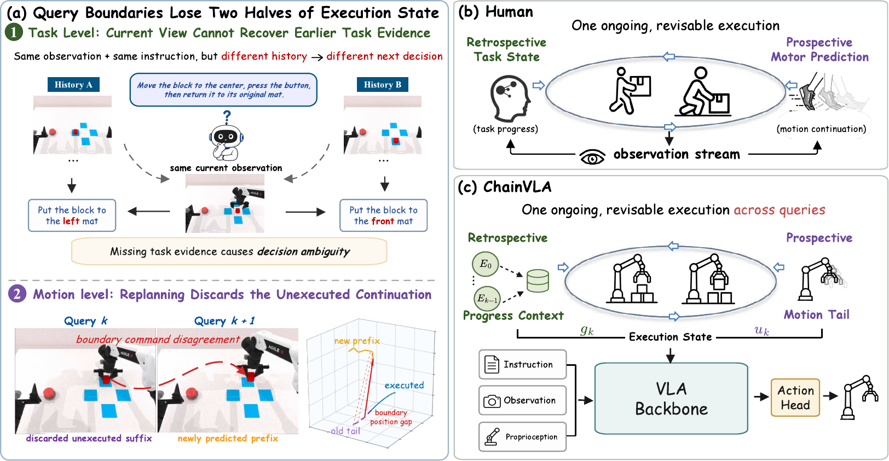
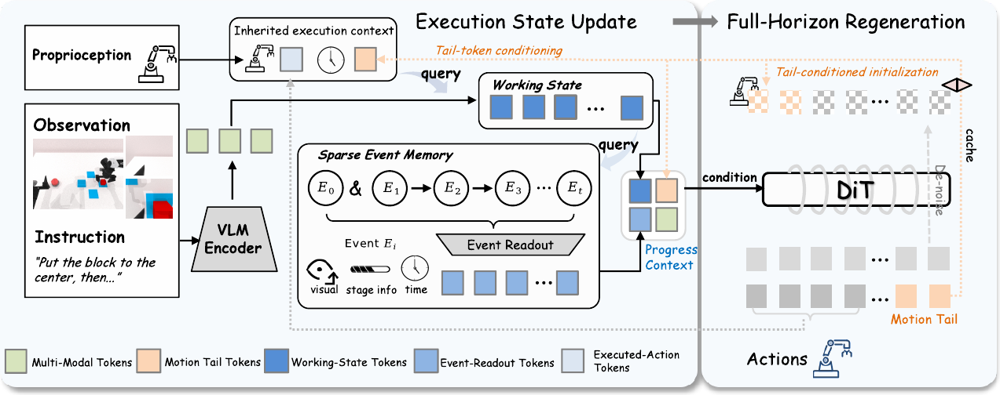
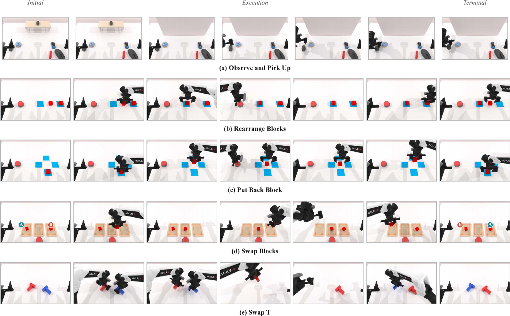
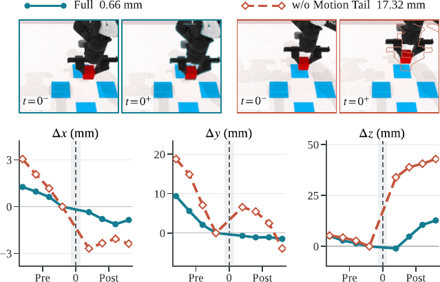
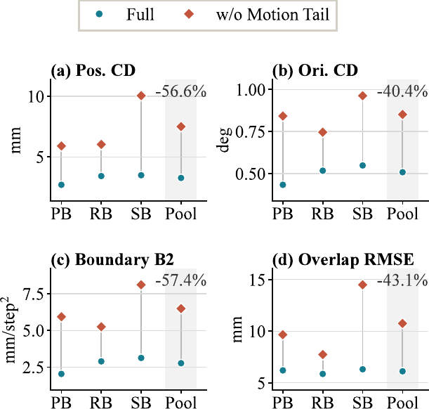

1. Unified Execution State: ChainVLA chains successive receding-horizon VLA queries through a joint and revisable execution state, so each new prediction inherits both the task progress and the unfinished motion of the preceding query instead of restarting from the current input alone.
2. Progress Context: A recurrent Working State combined with a Sparse Event Memory carries observation-derived task progress, keeping evidence that has left the current view available to condition each new decision.
3. Motion Tail: The preceding prediction's unexecuted continuation conditions state construction and trajectory initialization, while the decoder regenerates every horizon position under the latest observation, keeping the carried state a revisable prior rather than a fixed plan.
4. Strong Results: ChainVLA reaches 62.8% average success on memory-dependent RMBench and 98.8% across four LIBERO suites. Removing Motion Tail or Progress Context collapses RMBench success to 11.2% and 3.0%, while post-decoding seam smoothing alone recovers at most 2%.

At each query, Progress Context combines live Working State tokens with event evidence retrieved from the Sparse Event Memory, while Motion Tail carries the preceding prediction's unexecuted suffix into state construction and action generation. The decoder regenerates the full horizon under the latest query input; prefix execution then advances task progress, and the newly predicted suffix is carried forward for the next query.

RMBench provides five memory-dependent bimanual tasks, each requiring several placements in sequence, so a single episode passes through multiple stages and therefore multiple query boundaries. We additionally evaluate on the Spatial, Object, Goal, and Long suites of LIBERO as a breadth check.
| Policy | Obs. | Rearr. | Put B. | Swap B. | Swap T. | Avg. |
|---|---|---|---|---|---|---|
| DP | 1 | 0 | 0 | 11 | 20 | 6.4 |
| ACT | 1 | 29 | 0 | 2 | 2 | 6.8 |
| π0.5 (2.6B+0.3B) | 9 | 13 | 11 | 24 | 15 | 14.4 |
| X-VLA (0.9B) | 9 | 13 | 18 | 16 | 3 | 11.8 |
| MemER | 7 | 17 | 0 | 14 | 7 | 9.0 |
| MemoryVLA (7B+0.3B) | 0 | 22 | 50 | 17 | 9 | 19.6 |
| Mem-0 (8B+2B) | 4 | 89 | 90 | 67 | 14 | 52.8 |
| MemoAct | 4 | 98 | 41 | -- | 55 | -- |
| ChainVLA (1.2B) | 11 | 93 | 96 | 74 | 40 | 62.8 |
| Policy | Spatial | Object | Goal | Long | Avg. |
|---|---|---|---|---|---|
| OpenVLA (7B) | 84.7 | 88.4 | 79.2 | 53.7 | 76.5 |
| SpatialVLA (3.5B) | 88.2 | 89.9 | 78.6 | 55.5 | 78.1 |
| π0-FAST (3B) | 96.4 | 96.8 | 88.6 | 60.2 | 85.5 |
| GR00T-N1 (2.2B) | 94.4 | 97.6 | 93.0 | 90.6 | 93.9 |
| π0 (3.3B) | 96.8 | 98.8 | 95.8 | 85.2 | 94.2 |
| π0.5 + KI | 98.0 | 97.8 | 95.6 | 85.8 | 94.3 |
| PAM | 86.1 | 97.0 | 94.5 | 84.7 | 90.6 |
| MemoryVLA (7B+0.3B) | 98.4 | 98.4 | 96.4 | 93.4 | 96.7 |
| CronusVLA (7B) | 97.3 | 99.6 | 96.9 | 94.0 | 97.0 |
| X-VLA (0.9B) | 98.2 | 98.6 | 97.8 | 97.6 | 98.1 |
| ChainVLA (1.2B) | 98.4 | 99.4 | 99.2 | 98.2 | 98.8 |
Comparison rows follow the cited references and were not rerun under our protocol.
| Configuration | Obs. | Rearr. | Put B. | Swap B. | Swap T. | Avg. |
|---|---|---|---|---|---|---|
| ▼ Task-progress side (motion continuation kept) | ||||||
| w/o Stage Ann. | 10 | 84 | 78 | 61 | 34 | 53.4 |
| w/o Live Tokens | 10 | 78 | 72 | 48 | 28 | 47.2 |
| w/o Event Readout | 9 | 65 | 25 | 38 | 24 | 32.2 |
| w/o Progress Ctx. | 6 | 4 | 0 | 1 | 4 | 3.0 |
| ▼ Motion-continuation side (task progress kept) | ||||||
| w/o Tail Tokens | 8 | 78 | 78 | 58 | 38 | 52.0 |
| w/o Traj. Init. | 7 | 60 | 45 | 45 | 33 | 38.0 |
| w/o Motion Tail | 1 | 24 | 0 | 2 | 29 | 11.2 |
| ▼ No carried state, and a substitute | ||||||
| w/o Both | 4 | 0 | 0 | 0 | 4 | 1.6 |
| FIFO Hist. + TE | 8 | 58 | 47 | 40 | 25 | 35.6 |
| ChainVLA (Full) | 11 | 93 | 96 | 74 | 40 | 62.8 |
Removing either half of the carried state collapses performance, while the complete state is required for the full gain.
| Method | Put Back Block | Swap Blocks | ||
|---|---|---|---|---|
| Succ. | CDp | Succ. | CDp | |
| w/o Motion Tail | 0 | 5.90 | 2 | 10.06 |
| Linear Cont. | 0 | 2.09 | 2 | 3.72 |
| Temporal Ens. | 0 | 3.57 | 0 | 7.52 |
| Full | 96 | 2.69 | 74 | 3.49 |
Post-decoding controls reduce most measured boundary errors yet recover at most 2% success: reducing output-level seams alone does not explain the complete-policy gain.

Illustrative Put Back Block boundary from paired-scene rollouts: 0.66 mm position CD with Motion Tail against 17.32 mm without it.

Boundary errors for Full and w/o Motion Tail over 80 matched pairs: pooled reductions of 56.6%, 40.4%, 57.4%, and 43.1% for the four diagnostics.
@misc{huang2026chainvla,
title={ChainVLA: Chaining Vision-Language-Action Queries through a Unified Execution State for Long-Horizon Manipulation},
author={Yuzhi Huang and Weijue Bu and Ziyi Xiong and Jie Wu and Fanding Huang and Jingyan Jiang and Zhi Wang},
year={2026},
note={arXiv preprint},
}